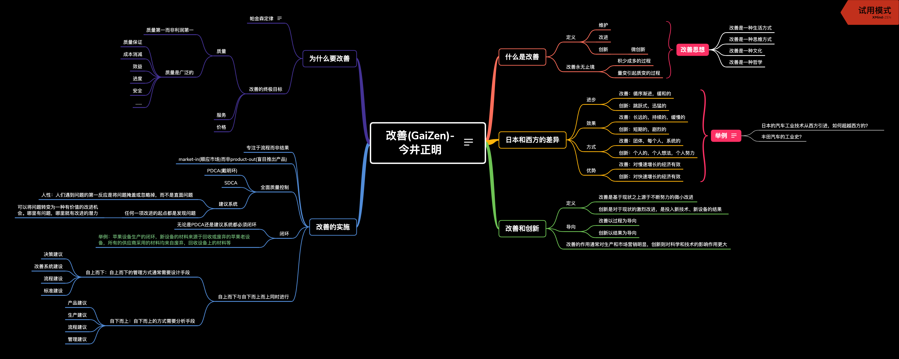
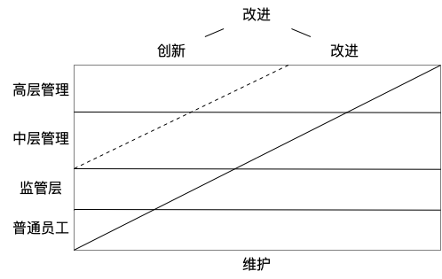

改善(今井正明)读书笔记
改善（KaiZen）是世界著名的质量管理大师，改善思想之父今井正明的代表作，改善成为了一种文化，一种生活方式。它是积小成多，量变引起质变的一种体现。下面是整书的梳理并结合自己的思考梳理关于改善的思维导图：

改善是一种理念，它包含了突变，渐变的过程，是基于现状之上源源不断的进行微小的改进，改善不仅包括了改进，同时也包括创新。改善是永恒的存在，因此是永无止境的。改善在不同的岗位上存在一定的差异，如普通员工，管理人员在改善上可以是下面的方式，但是改善始终是自下而上和自上而下的双向过程。

竞争的驱动力是价格，质量和服务，但是在日本，竞争的本质还是竞争本身。如果将利润看作企业成功的准则，那么就不难理解一个公司几十年没有任何变化。如果公司之间激烈的竞争改善的实力，那么这样的公司会持续的改进，处于永远进取的状态。
改善和创新是两种不同的思维导向，改善是以过程为导向，而创新是以目标为导向。也是因为目标导向的不同，两者的思想不同，结果不同，发展不同。西方管理者是信仰创新的，因此很多新的技术，产品都出自于西方技术。 创新被看成是由技术突破，应用的最新管理理念而发生的中带改变。创新是迅速的，非常大的变动；而改善是温和的，微妙的，连续的过程。创新是跳跃性的发展，同时也是不稳定的；而改善是持续性的，稳定的。创新是严重的个人主义，个人思想；而改善是团队型的，系统的方式。改善的针对的方向是人，而创新主要是针对某个技术。
在作者的观点中，任何事物或系统在存在开始，就开始衰败（帕金森定律），因此任何时候都应该维持努力，改善；即使是创新之后都应该用一系列改善去维护和改进创新的成果。非常明显的是建立标准-实施-改善标准-再实施的过程，在这不断迭代的过程中，相互优化，最终不断的增强自身的竞争力以及产品质量等。
改善和创新两种思维在实用性上也有一定的区别，改善哲学适用于增长较慢的经济；而创新适合增长较快的经济。比如当我门增加销量10%时非常苦难，但是我们减少10%的成本可能更加容易，这时改善在整个过程中是非常重要的。
最后总结一句话：每个人应该试着改变自己，虽然不是每一个人都是天才，但是每个人都可以逐渐的强大，即使是一个普通的人。